Per schilderij: de huidige beschrijving met gemarkeerde problemen, een nieuw voorstel, en een veld voor jullie eigen tekst. Kies per stuk: huidig behouden, voorstel overnemen, of eigen tekst.
Keuzes gemaakt: 0 / 0
❌ Feitelijk onjuist
Beschrijvingen die niet kloppen met wat er op het schilderij te zien is
#01
De Drie Zusters
OnjuistCommercieel
Huidig (NL)De drievoudige godin — schepper, bewaarder, vernietiger — samengebracht in één doek. Bladgoud en dik opgebracht reliëf geven de figuren een bijna sculpturaal karakter. Een van de meest ambitieuze werken in de collectie.
Voorstel (NL)
Drie vrouwen in groen, oranje en blauw — elk met een eigen blik, samen een eenheid. De gewaden zijn in dik reliëf geschilderd en de gouden tulbanden glinsteren. Een groot formaat werk dat de ruimte vult.
Huidig (EN)The triple goddess — creator, preserver, destroyer — united on one canvas. Gold leaf and thickly applied relief give the figures an almost sculptural quality. One of the most ambitious works in the collection.
Voorstel (EN)
Three women in green, orange and blue — each with her own gaze, together a unity. The robes are painted in thick relief and the golden turbans glisten. A large-format work that fills the room.
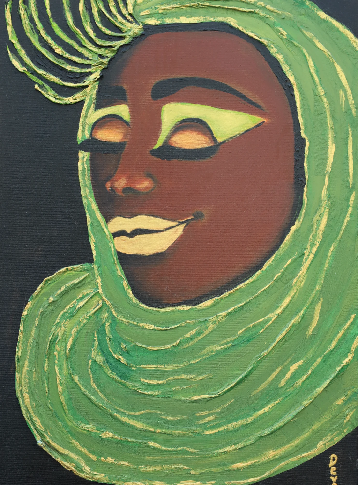
#10
Droomster in Groen
OnjuistCommercieel
Huidig (NL)De gesloten ogen maken dit het meest contemplatieve werk in de collectie. Het groen werkt kalmerend — dit is een schilderij dat rust brengt in de ruimte waar het hangt.
Voorstel (NL)
De halfgeloken ogen en de neergeslagen blik geven dit werk een contemplatief karakter. Het groen werkt kalmerend, de gouden strepen in de doek geven warmte en diepte.
Huidig (EN)The closed eyes make this the most contemplative work in the collection. The green has a calming effect — this is a painting that brings stillness to the room where it hangs.
Voorstel (EN)
The half-closed eyes and downward gaze give this work a contemplative character. The green has a calming effect, while the golden streaks in the cloth add warmth and depth.
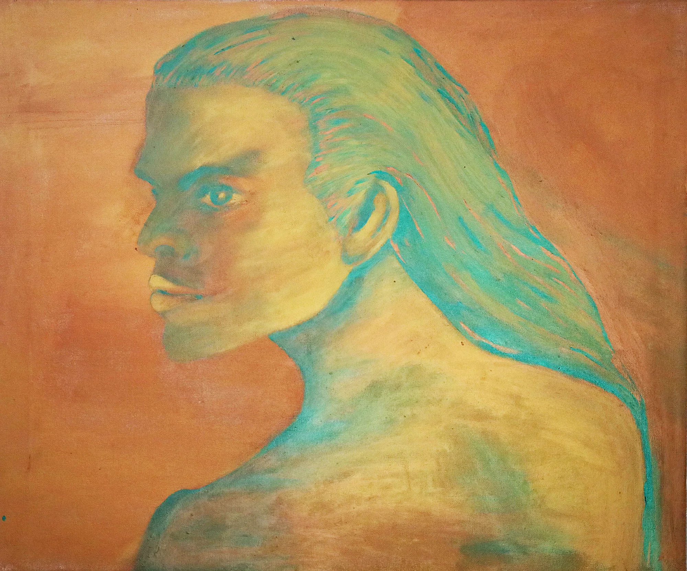
#13
Kracht
Mismatch met titel
Huidig (NL)Alsof gezien door water of door een herinnering die langzaam vervaagt. De kleuren lopen in elkaar over zonder scherpe grenzen — dit is schilderen als dromen.
Voorstel (NL)
Een profiel in turquoise en oker dat dwars door het doek heen lijkt te kijken. De kleuren zijn onnatuurlijk en bewust gekozen — dit is geen portret naar het leven, maar een innerlijk beeld. De blik is direct en onverzettelijk.
Huidig (EN)As if seen through water or through a memory slowly fading. The colours bleed into each other without sharp edges — this is painting as dreaming.
Voorstel (EN)
A profile in turquoise and ochre that seems to look straight through the canvas. The colours are unnatural and deliberately chosen — this is not a portrait from life, but an inner image. The gaze is direct and unyielding.
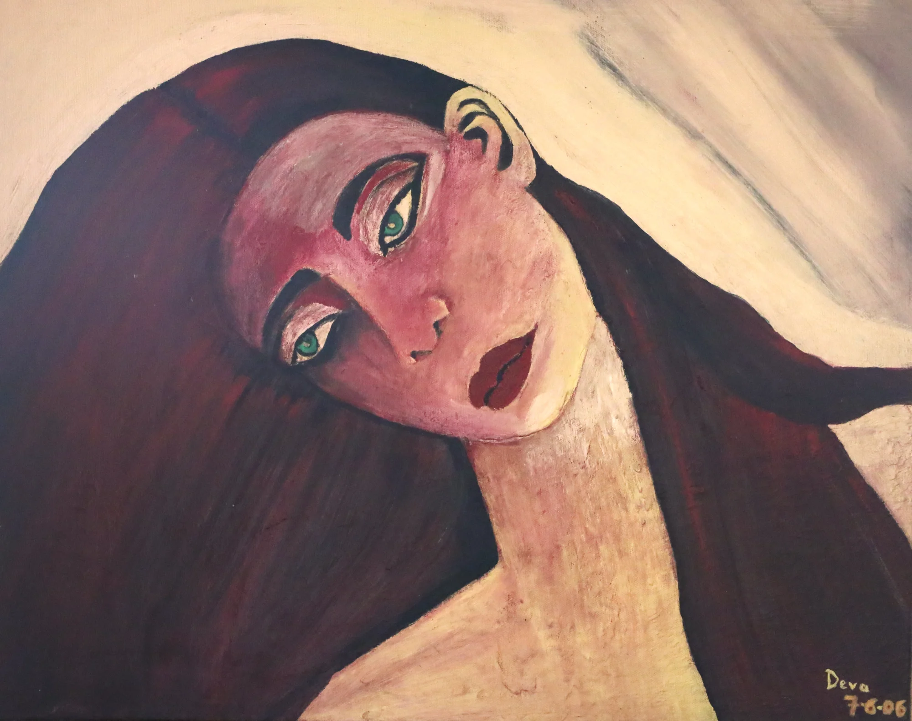
#14
Dagdroom
Onjuiste vergelijking
Huidig (NL)
Kwetsbaar en direct — geen sluier, geen sieraad, geen afstand. De expressieve lijnen en het bewust versimpelde gezicht doen denken aan Modigliani, maar de warmte is eigen.
Voorstel (NL)
Kwetsbaar en direct — geen sluier, geen sieraad, geen afstand. De grote groene ogen en de expressieve lijnen geven het gezicht iets dromerigs. Een van de vroegere werken (2006), geschilderd met bewuste eenvoud.
Huidig (EN)
Vulnerable and direct — no veil, no ornament, no distance. The expressive lines and deliberately simplified face are reminiscent of Modigliani, but the warmth is entirely her own.
Voorstel (EN)
Vulnerable and direct — no veil, no ornament, no distance. The large green eyes and expressive lines give the face a dreamlike quality. One of the earlier works (2006), painted with deliberate simplicity.
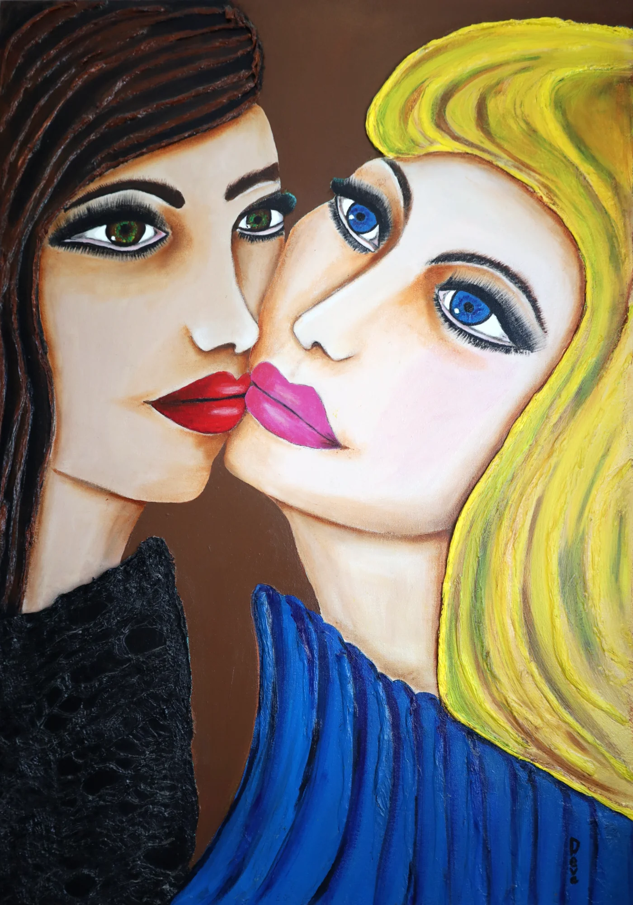
#12
Tweezaamheid
Onjuiste beschrijving stijl
Huidig (NL)
De ruimte tussen de twee gezichten is het eigenlijke onderwerp — dat halve centimeter dat een kus scheidt van een belofte. De expressieve lijnen zijn hier bewust ruw gelaten.
Voorstel (NL)
De ruimte tussen de twee gezichten is het eigenlijke onderwerp — dat halve centimeter dat een kus scheidt van een belofte. De lijnen zijn vloeiend en beheerst, de kleuren contrasteren: donker haar en blond, rode lippen en roze.
Huidig (EN)
The space between the two faces is the real subject — that half centimetre separating a kiss from a promise. The expressive lines are deliberately left raw here.
Voorstel (EN)
The space between the two faces is the real subject — that half centimetre separating a kiss from a promise. The lines are fluid and controlled, the colours contrast: dark hair and blonde, red lips and pink.
🛒 Te commercieel
Beschrijvingen die klinken als verkooppraatje of galeriebrochure
#02
Madonna van het Licht
Commercieel
Huidig (NL)
Het bladgoud vangt het licht op een manier die verandert met het tijdstip van de dag. De roze elementen rondom zweven als zegeningen — abstract en decoratief, niet figuratief. Een icoon voor aan de muur.
Voorstel (NL)
Het bladgoud vangt het licht op een manier die verandert met het tijdstip van de dag. De roze elementen rondom zweven als zegeningen — abstract en decoratief, niet figuratief. De groen-gouden mantel is in reliëf opgebracht.
Huidig (EN)
The gold leaf catches light in ways that shift throughout the day. The pink elements float around her like blessings — abstract and decorative, not figurative. An icon for the wall.
Voorstel (EN)
The gold leaf catches light in ways that shift throughout the day. The pink elements float around her like blessings — abstract and decorative, not figurative. The green-gold mantle is applied in relief.
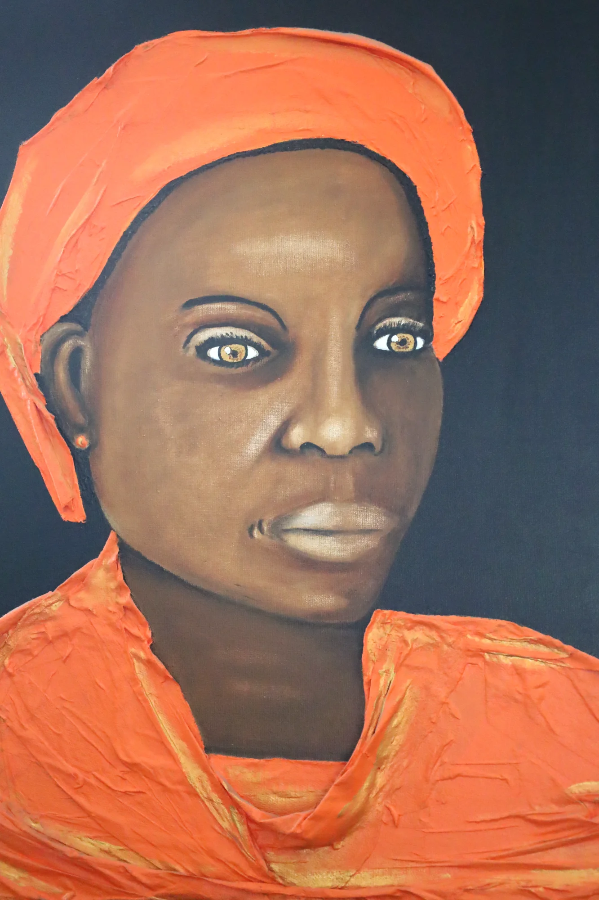
#09
Stille Kracht
Commercieel
Huidig (NL)
Geschilderd in dikke, pasteuze lagen die je met je vingers zou willen volgen. De verfopbouw geeft het portret een fysieke aanwezigheid — het kijkt je aan vanuit het doek alsof het leeft.
Voorstel (NL)
Geschilderd in dikke, pasteuze lagen die je met je vingers zou willen volgen. De verfopbouw geeft het portret een fysieke aanwezigheid — de directe blik en de trotse houding dragen de titel.
Huidig (EN)
Painted in thick, impasto layers that your fingers want to follow. The paint build-up gives the portrait a physical presence — it looks at you from the canvas as if alive.
Voorstel (EN)
Painted in thick, impasto layers that your fingers want to follow. The paint build-up gives the portrait a physical presence — the direct gaze and proud bearing carry the title.
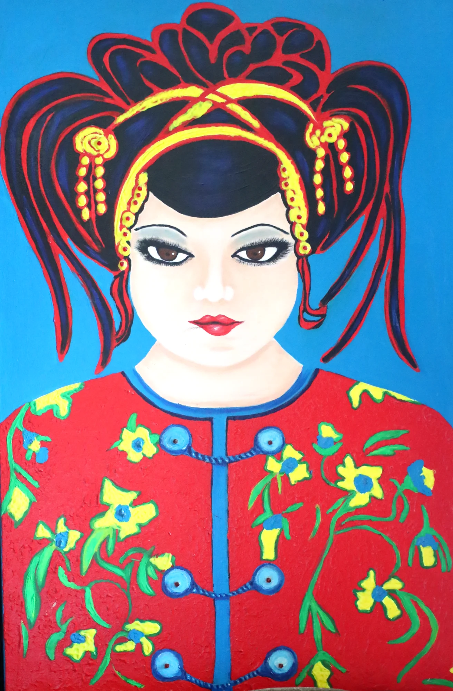
#16
Rode Bloesem
Commercieel
Huidig (NL)
Een van de kleurrijkste en meest gedetailleerde werken — elke bloem op het gewaad is individueel geschilderd. De gouden haarsieraden zijn in reliëf opgebracht. Een viering van ambacht en overdaad.
Voorstel (NL)
Elke bloem op het gewaad is individueel geschilderd, de gouden haarsieraden zijn in reliëf opgebracht. De blauwe achtergrond laat de rode en gouden tinten hard spreken. Een van de meest gedetailleerde werken in de collectie.
Huidig (EN)
One of the most colourful and detailed works — every flower on the robe is individually painted. The golden hair ornaments are applied in relief. A celebration of craft and abundance.
Voorstel (EN)
Every flower on the robe is individually painted, the golden hair ornaments applied in relief. The blue background lets the reds and golds speak boldly. One of the most detailed works in the collection.
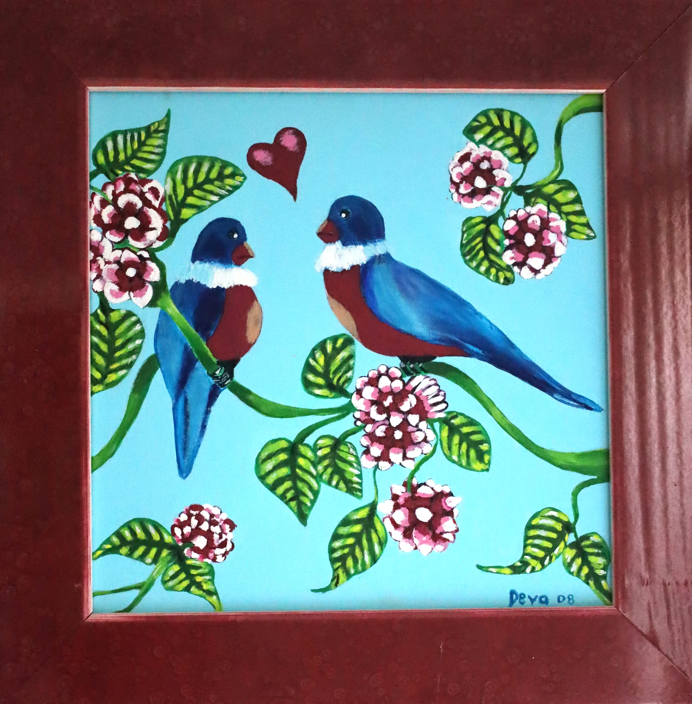
#19
Lente van het Hart
Commercieel
Huidig (NL)
Folkloristisch en ongegeneerd vrolijk — een breuk met de meer devotionele werken in de collectie. De warme kleuren en het speelse hartje maken dit een ideaal cadeau-schilderij.
Voorstel (NL)
Folkloristisch en ongegeneerd vrolijk — twee vogels, een hartje, bloemen in overvloed. Een breuk met de meer devotionele werken in de collectie, geschilderd met het plezier van vrij werken.
Huidig (EN)
Folksy and unabashedly cheerful — a break from the more devotional works in the collection. The warm colours and playful heart make this an ideal gift painting.
Voorstel (EN)
Folksy and unabashedly cheerful — two birds, a heart, flowers in abundance. A break from the more devotional works in the collection, painted with the pleasure of working freely.
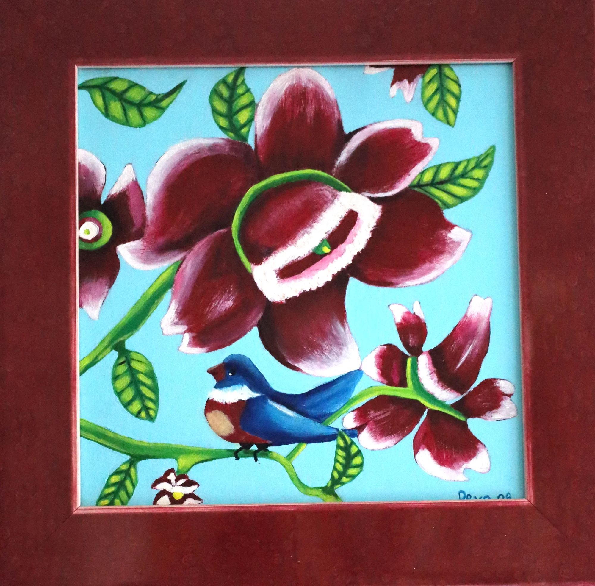
#20
Vogel & Bloem
Commercieel
Huidig (NL)
Decoratief en levendig — geschilderd met het plezier van iemand die geniet van kleur. De tropische sfeer maakt het een stuk dat een kamer opvrolijkt zonder iets te eisen.
Voorstel (NL)
Decoratief en levendig — grote donkerrode bloemen tegen een helderblauw vlak, met een vogel als speels accent. Tropisch van sfeer, geschilderd met losse hand en plezier in kleur.
Huidig (EN)
Decorative and lively — painted with the pleasure of someone who delights in colour. The tropical feel makes it a piece that brightens a room without demanding anything.
Voorstel (EN)
Decorative and lively — large dark-red flowers against a bright blue surface, with a bird as a playful accent. Tropical in feel, painted with a loose hand and delight in colour.
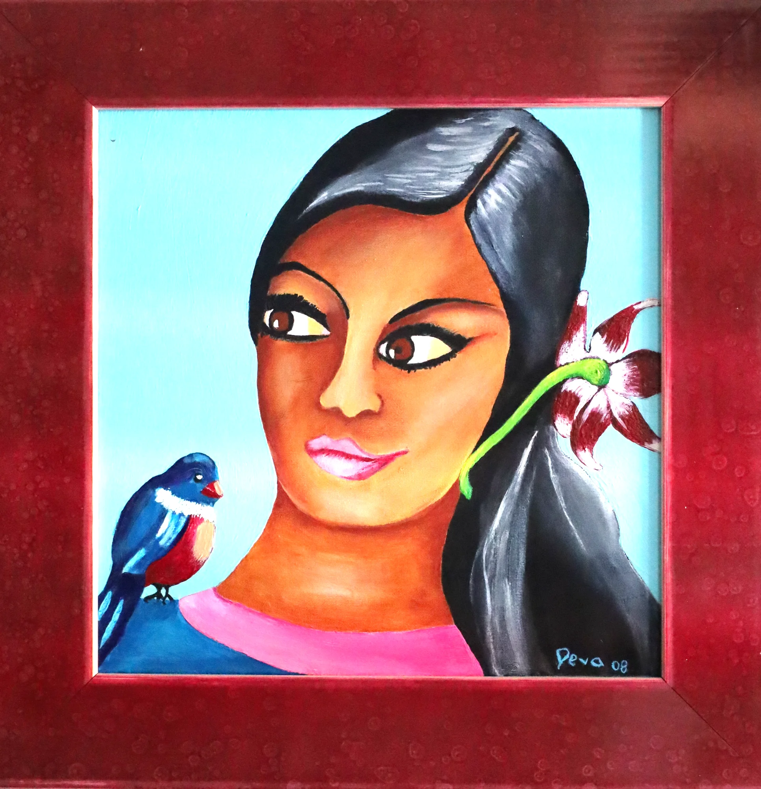
#21
Meisje met Vogel
Commercieel
Huidig (NL)Het zachtste werk in de collectie. De vogel op haar schouder voelt als een bezoeker uit een andere wereld — even neergestreken, zo weer weg.
Voorstel (NL)
Een warm portret met een speelse blik. De vogel op haar schouder voelt als een bezoeker uit een andere wereld — even neergestreken, zo weer weg. De bloem in haar haar echoot de kleuren van de vogel.
Huidig (EN)The softest work in the collection. The bird on her shoulder feels like a visitor from another world — alighted for a moment, soon to fly away.
Voorstel (EN)
A warm portrait with a playful gaze. The bird on her shoulder feels like a visitor from another world — alighted for a moment, soon to fly away. The flower in her hair echoes the colours of the bird.
❓ Twijfelgevallen — check met Deva
Claims die ik niet zeker kan verifiëren vanaf foto's
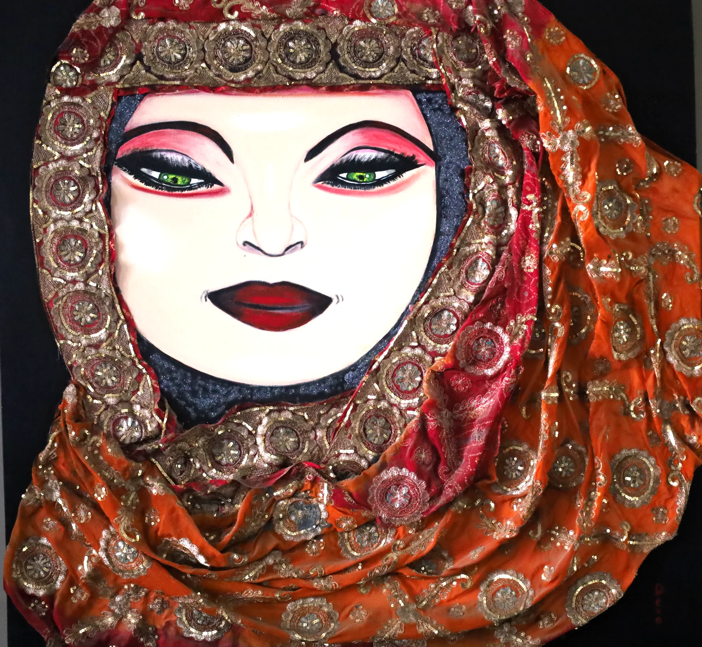
#06
Gesluierde in Oranje
Check met Deva
Vraag: Ik schreef "gouden munten" — maar het lijken eerder ronde medaillons of borduurwerk in de stof. Wat is het precies?
Huidig (NL)
Echte stof en gouden munten zijn in het doek verwerkt — dit schilderij vraagt om van dichtbij bekeken te worden. De grens tussen schilderkunst en sculptuur vervaagt. Raak het bijna aan.
Voorstel als het geen munten zijn (NL)
Echte stof en gouden medaillons zijn in het doek verwerkt — dit schilderij vraagt om van dichtbij bekeken te worden. De grens tussen schilderkunst en sculptuur vervaagt.
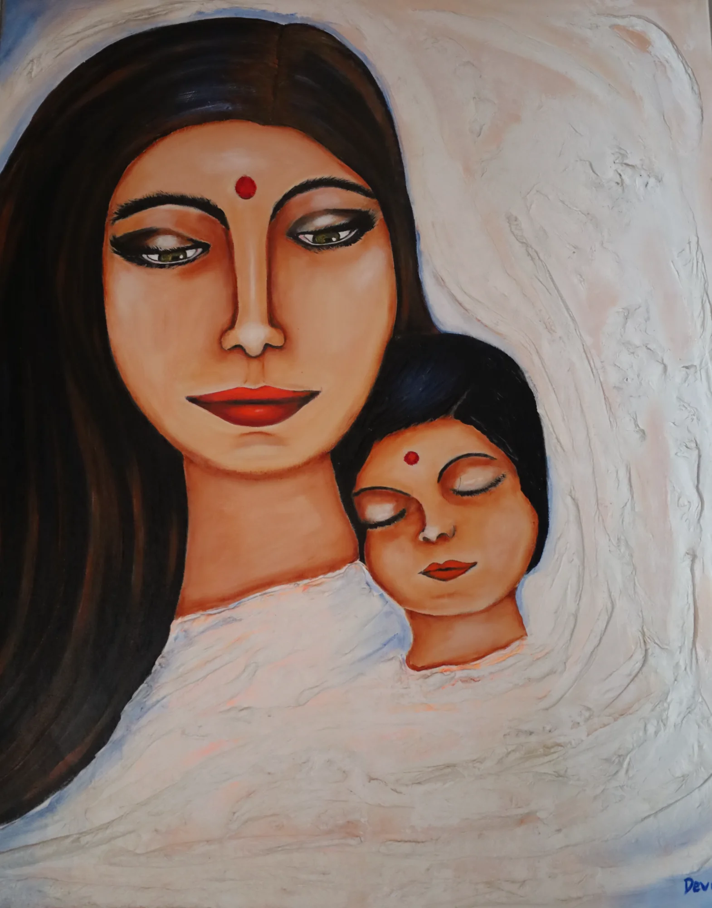
#04
Geborgenheid
Check met Deva
Vraag: Ik schreef "geschilderd zonder sentimentaliteit" — maar het IS een moeder-kind schilderij. Is het bewust niet-sentimenteel, of is het juist wél teder bedoeld?
Huidig (NL)
Het wit reliëf op de achtergrond werkt als een cocon — het isoleert moeder en kind van de wereld. Het universele gebaar van bescherming, geschilderd zonder sentimentaliteit.
Voorstel (NL)
Het wit reliëf op de achtergrond werkt als een cocon — het isoleert moeder en kind van de wereld. Beide dragen een bindi; de gesloten ogen van het kind drukken volledig vertrouwen uit.
Huidig (EN)
The white relief in the background works as a cocoon — isolating mother and child from the world. The universal gesture of protection, painted without sentimentality.
Voorstel (EN)
The white relief in the background works as a cocoon — isolating mother and child from the world. Both wear a bindi; the child's closed eyes express complete trust.
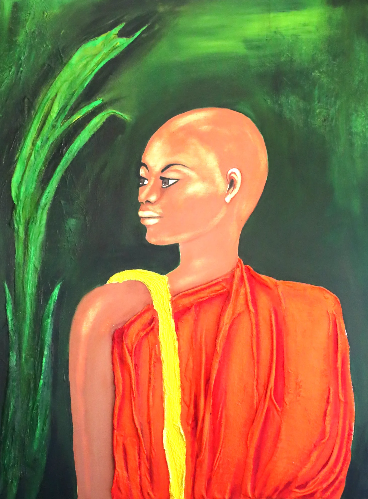
#15
Stilte in Saffraan
Check met Deva
Vraag: Ik schreef "het enige mannelijke portret" — de geschoren hoofd en monniksgewaad suggereren dat, maar is het bewust mannelijk? Of genderneutraal?
Huidig (NL)Het enige mannelijke portret in de collectie — en misschien het stilste. Het reliëf van het saffraan gewaad contrasteert met de gladde kalmte van het gezicht. Een schilderij als meditatie.
Voorstel (NL) — als het mannelijk is
Het enige mannelijke portret in de collectie. Het reliëf van het saffraan gewaad contrasteert met de gladde kalmte van het gezicht. De groene achtergrond roept tropisch blad op — stilte en warmte tegelijk.
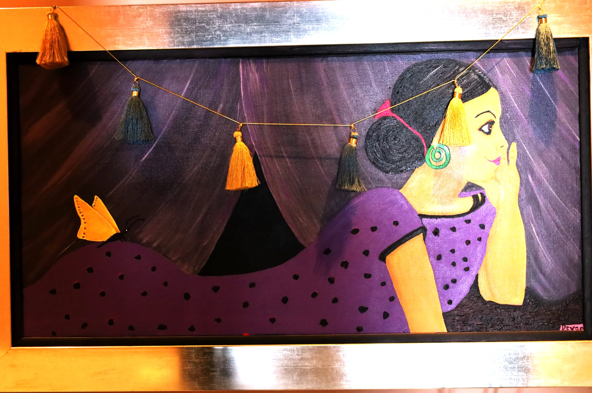
#17
Droomster met Vlinder
Check met Deva
Vraag: Ik schreef "ingelijst met bladgoud" — maar op de foto zie ik een fysiek gouden kader. Is het bladgoud op het doek zelf, of is het het kader?
Huidig (NL)
Echte kwasten hangen aan het doek en bewegen mee met de lucht in de kamer. Ingelijst met bladgoud, speels en dromerig — dit werk weigert stil te zijn en beweegt met je mee.
Voorstel (NL) — als het het kader is, niet bladgoud
Echte kwasten hangen aan het doek en bewegen mee met de lucht in de kamer. Speels en dromerig — de vlinder, de gestippelde jurk en de paarse tinten geven het werk een sprookjesachtige sfeer.
📷 Beeldkwaliteit
Foto's die bijgesneden, opnieuw gefotografeerd, of kleur-gecorrigeerd moeten worden
#17 Droomster met Vlinder
Gouden kader domineert de foto. Schilderij is klein in beeld. Bijsnijden of opnieuw fotograferen.
#19 Lente van het Hart
Breed donkerrood kader zichtbaar. Bijsnijden zodat alleen het schilderij overblijft.